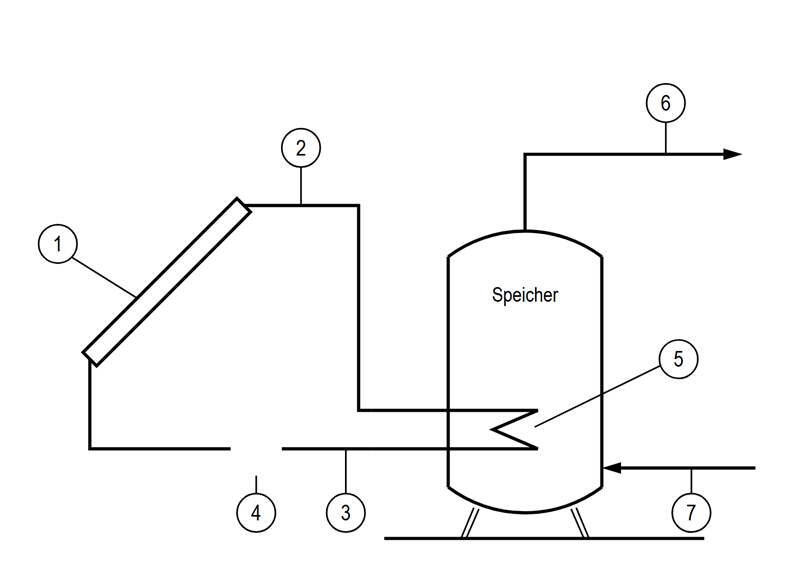
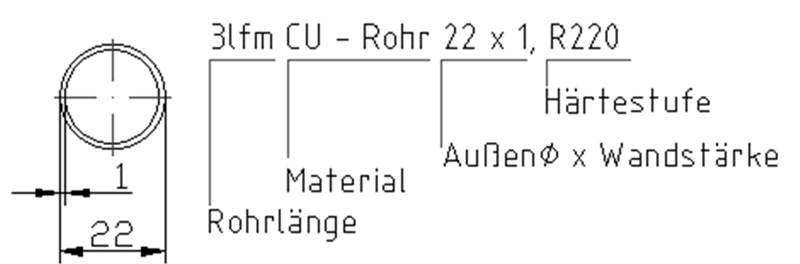
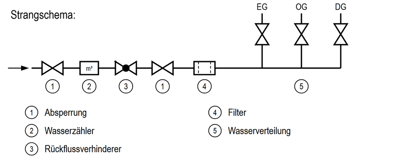
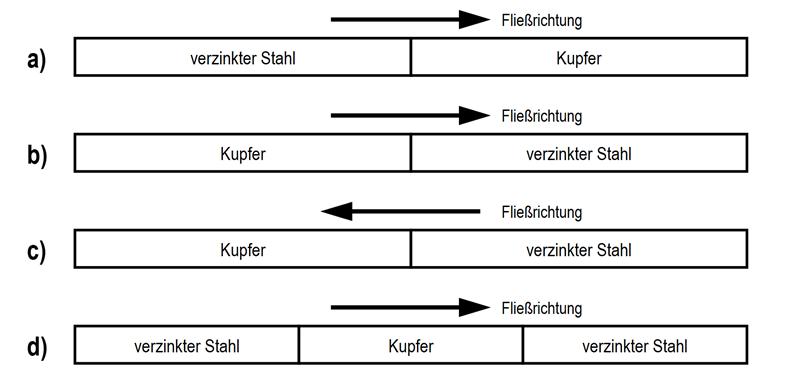
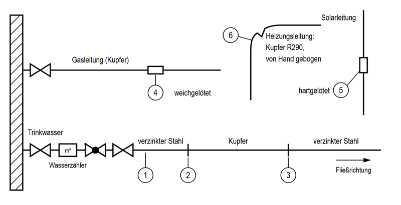

Kupfer
Heute lernst du: woher Kupfer kommt, wo man Kupferrohre einsetzt, wie hart ein Kupferrohr ist, wie man Kupferrohre verbindet und lötet und warum die Reihenfolge der Metalle wichtig ist.
So arbeitest du: Lies zuerst den grauen Infokasten. Mach dann die Aufgaben darunter. Die Antworten findest du im Infokasten. Fertig? Tippe bei jeder Aufgabe auf „Prüfen“. Bessere deine Fehler aus.
„Mehr wissen ★★★“: erweiterte Aufgabenstellungen.
Du brauchst: Taschenrechner.
Infokasten A: Woher kommt Kupfer? (Herstellung)
|
Das chemische Zeichen für Kupfer ist Cu. Man stellt Kupfer aus Kupfererz her. Das ist Gestein, in dem Kupfer steckt. Das Erz baut man meist im Tagebau ab (eine riesige Grube an der Oberfläche). Der größte Produzent ist Chile (Südamerika). Chile liefert etwa ein Viertel vom Kupfer der ganzen Welt. Im Gestein ist nur etwa 1 % Kupfer. Das heißt: In 100 kg Gestein ist nur 1 kg Kupfer. Für wenig Kupfer muss man also sehr viel Gestein bewegen. Das ist eine große Belastung für die Umwelt. Darum soll man altes Kupfer recyceln (wieder verwenden): Alte Kupferrohre kommen nicht in den Müll, sondern zum Schrotthändler. Merke: Im Gestein ist nur 1 % Kupfer. Darum: Kupfer recyceln! |
Aufgabe 1 ★ leicht – Richtig oder falsch?
Lies Infokasten A. Kreuze an: richtig (R) oder falsch (F).
| Satz | R | F |
|---|---|---|
| Das chemische Zeichen für Kupfer ist Cu. | ||
| Kupfererz ist fast reines Kupfer. | ||
| Chile ist der größte Kupfer-Produzent der Welt. | ||
| Alte Kupferrohre wirft man in den Restmüll. |
Aufgabe 2 ★ leicht – Wie viel Kupfer steckt im Gestein?
Lies Infokasten A. Rechne und tipp das Ergebnis ein.
Tipp: 1 % heißt: durch 100 teilen.
| a) 5000 kg Gestein: darin sind | kg | |
| b) 20 000 kg Gestein: darin sind | kg |
c) Warum soll man Kupfer recyceln? Kreuze an.
| Weil Kupfer im Müll giftig wird. | |
| Weil man für wenig Kupfer sehr viel Gestein abbauen muss. Das belastet die Umwelt. | |
| Weil altes Kupfer besser ist als neues. |
Infokasten B: Wo nimmt man Kupfer? (Einsatzgebiete und Eigenschaften)
|
Einsatzgebiete: Kupferrohre findest du bei • Trinkwasserleitungen • Heizung • Solaranlagen • Wärmetauschern • Kälteanlagen • Gasleitungen Eigenschaften: Darum ist Kupfer so beliebt:
Beispiel Solaranlage: Am Dach wird das Wasser im Solarkollektor von der Sonne sehr heiß. Der heiße Solar-Vorlauf geht oben weg zum Wärmetauscher im Speicher. Dort gibt er die Wärme an das Trinkwasser ab. Die Umwälzpumpe pumpt das abgekühlte Wasser im Solar-Rücklauf wieder zum Kollektor. Kaltwasser kommt unten in den Speicher, Warmwasser geht oben weg. Die Leitungen am Dach sind heiß und in der Sonne. Darum nimmt man Kupfer. Merke: Kupfer verträgt Hitze und Sonne. Darum nimmt man es für die Solaranlage. |
Aufgabe 3 ★★ mittel – Die Solaranlage
Das Bild zeigt eine Solaranlage. Bei Nr. 4 fehlt im Bild die Umwälzpumpe.

b) Lies Infokasten B. Welcher Begriff gehört zu welcher Nummer? Tipp den Buchstaben ein.
A Kaltwasser – B Solar-Rücklauf – C Solar-Vorlauf – D Solarkollektor – E Umwälzpumpe – F Wärmetauscher – G Warmwasser
| 1 | 2 | 3 | 4 | 5 | 6 | 7 |
|---|---|---|---|---|---|---|
c) Warum nimmt man für die Solaranlage Kupfer? Kreuze an.
| Weil Kupfer billig ist. | |
| Weil Kupfer leicht zu biegen ist. | |
| Weil Kupfer Hitze verträgt und UV-beständig ist (Sonne macht nichts). |
Aufgabe 4 ★ leicht – Welche Eigenschaft ist das?
Lies Infokasten B. Welche Eigenschaft passt? Kreuze in jeder Zeile 1 Kästchen an.
| Das sagt der Kunde | altert nicht | verträgt Hitze | diffusionsdicht | UV-beständig |
|---|---|---|---|---|
| „Das Rohr liegt am Dach in der Sonne.“ | ||||
| „Es soll 40 Jahre halten und nicht brüchig werden.“ | ||||
| „In die Heizung soll kein Sauerstoff kommen.“ | ||||
| „Im Kollektor wird das Wasser sehr heiß.“ |
Infokasten C: Wie hart ist das Rohr? (Härtegrade und Rohrbenennung)
|
Kupferrohre gibt es in 3 Härtegraden. Der Härtegrad steht als Zahl mit R auf dem Rohr. Je größer die Zahl, desto härter ist das Rohr.
Rohrbenennung: So bestellst du ein Kupferrohr:  • 3 lfm = Rohrlänge 3 m (lfm = Laufmeter) • CU-Rohr = Material Kupfer • 22 x 1 = Außendurchmesser D = 22 mm, Wandstärke s = 1 mm (Ø heißt Durchmesser) • R220 = Härtestufe weich Innendurchmesser: d = D − 2 · s. Die Wand ist oben und unten, darum 2 · s. Rechne zuerst 2 · s, dann minus. Merke: R220 = weich (Ring). R290 = ziehhart, nicht biegen! |
Aufgabe 5 ★ leicht – Die Härtegrade
Lies Infokasten C. Was gehört in die leeren Felder? Tipp den Buchstaben ein.
A halbhart – B R220 – C R290 – D Ring (Bund), 25 m oder 50 m – E Rolle, 100 m – F Stange, 5 m – G ziehhart
Achtung: 1 Antwort bleibt übrig.
| Härtegrad | Zeichen | Lieferform |
|---|---|---|
| weich | ||
| R250 | ||
| Stange, 5 m |
Aufgabe 6 ★★ mittel – Kupferrohr bestellen
a) Lies Infokasten C. Auf dem Lieferschein steht: 12 lfm CU-Rohr 18 x 1, R290. Tipp die Zahlen ein und kreuze an.
| Rohrlänge = | m | |
| Außen-Ø D = | mm | |
| Wandstärke s = | mm |
| Material | Stahl | Kupfer | Kunststoff |
| Härtegrad | weich | halbhart | ziehhart |
b) Der Chef braucht 50 m weiches Kupferrohr. Außen-Ø 15 mm, Wandstärke 1 mm. Welche Bestellung ist richtig? Kreuze an.
| 50 lfm CU-Rohr 15 x 1, R290 | |
| 50 lfm CU-Rohr 15 x 1, R220 | |
| 15 lfm CU-Rohr 50 x 1, R220 |
c) Rechne den Innendurchmesser d vom Rohr in a) aus. Formel: d = D − 2 · s. Rechne zuerst 2 · s.
| d = | mm |
Infokasten D: Wie verbindet man Kupferrohre? (Verbindungstechniken)
|
Es gibt 4 Arten, Kupferrohre zu verbinden:
Merke: Löten = mit Flamme. Pressen, Klemmen, Stecken = ohne Flamme. |
Aufgabe 7 ★ leicht – Welche Verbindung ist das?
Lies Infokasten D. Welche Verbindung passt? Kreuze in jeder Zeile 1 Kästchen an.
| Das macht der Monteur | Löten | Pressfitting | Klemmring | Steckverbinder |
|---|---|---|---|---|
| Er steckt das Rohr nur hinein. Fertig. | ||||
| Er nimmt den Brenner und das Lot. | ||||
| Er zieht die Mutter mit 2 Schlüsseln fest. | ||||
| Er setzt die Pressbacke an. Es bleibt kalt. |
Infokasten E: Wie lötet man? (Weichlöten und Hartlöten)
|
Beim Löten verbindet man zwei Teile mit einem geschmolzenen Metall, dem Lot. Das Lot schmilzt, das Rohr selbst schmilzt nicht. Lötspalt: Zwischen Rohr und Fitting ist ein ganz enger Spalt. Das flüssige Lot wird in diesen Spalt hineingezogen, sogar nach oben. Das nennt man Kapillarwirkung. Ist der Spalt zu groß, geht das nicht. Flussmittel: Vor dem Löten streichst du Flussmittel auf das Rohr. Es entfernt die Oxidschicht (die dunkle Schicht auf dem Kupfer) und schützt die Lötstelle beim Erwärmen. Flussmittel für Trinkwasser muss wasserlöslich sein. Dann kann man die Reste ausspülen. Es gibt 2 Arten zu löten. Der Unterschied ist die Arbeitstemperatur:
Gas: Eine undichte Gasleitung ist lebensgefährlich (Explosion, Vergiftung). Darum muss die Verbindung sehr fest sein. Gas wird hartgelötet. So lötest du (Weichlöten): 1. Rohr rechtwinklig ablängen. 2. Rohr innen und außen entgraten. 3. Rohrende außen und Fitting innen blank machen (Reinigungsvlies). 4. Flussmittel dünn auf das Rohrende streichen. 5. Rohr bis zum Anschlag in den Fitting stecken. 6. Gleichmäßig erwärmen und das Lot an den Spalt halten. 7. Abkühlen lassen, dabei nicht bewegen. Flussmittelreste abwischen. Merke: Weichlöten bis 450 °C, Hartlöten über 450 °C. Gas wird hartgelötet. |
Aufgabe 8 ★ leicht – Löten zuordnen
Lies Infokasten E. Gehört das zum Weichlöten oder zum Hartlöten? Tipp W (Weichlöten) oder H (Hartlöten).
| Das gehört dazu | W oder H |
|---|---|
| Arbeitstemperatur bis 450 °C | |
| Arbeitstemperatur über 450 °C | |
| Vorteil: korrosionssicher | |
| Vorteil: hohe Festigkeit der Verbindung | |
| Nachteil: Härtestufe wird herabgesetzt (das Rohr wird weich) | |
| Nachteil: weniger hitzebeständig | |
| Einsatz: Trinkwasser, Heizung | |
| Einsatz: Gas, Kälte, Klima, Solar |
Aufgabe 9 ★ leicht – Weich oder hart löten?
Lies Infokasten E. Wie lötest du hier? Kreuze an.
| Baustelle | weichlöten | hartlöten |
|---|---|---|
| Gasleitung zum Gasherd | ||
| Kaltwasserleitung zum Waschtisch | ||
| Leitung vom Solarkollektor am Dach | ||
| Anschluss vom Heizkörper | ||
| Warmwasserleitung zur Dusche |
Aufgabe 10 ★★ mittel – Die Lötverbindung
Beim Lötfitting ist zwischen Rohr und Fitting ein ganz enger Spalt (Infokasten E).
c) Wie kommt das Lot in den Spalt? Kreuze an.
| Man drückt es mit dem Brenner hinein. | |
| Das flüssige Lot wird in den engen Spalt hineingezogen (Kapillarwirkung). | |
| Das Lot fließt nur nach unten in den Spalt. |
Aufgabe 11 ★ leicht – Die richtige Reihenfolge
Lies Infokasten E. Bring die Arbeitsschritte beim Weichlöten in die richtige Reihenfolge. Schreib 1 bis 7 in die Kästchen.
| Nr. | Arbeitsschritt |
|---|---|
| Flussmittel dünn auf das Rohrende streichen. | |
| Abkühlen lassen und Flussmittelreste abwischen. | |
| Rohr rechtwinklig ablängen. | |
| Rohr bis zum Anschlag in den Fitting stecken. | |
| Rohrende und Fitting blank machen. | |
| Gleichmäßig erwärmen und das Lot an den Spalt halten. | |
| Rohr innen und außen entgraten. |
Infokasten F: Warum ein Filter? Welches Metall zuerst? (Lochfraß und Fließregel)
 Mischinstallation: In einer Leitung sind verschiedene Metalle. Metalle sind verschieden edel. Berühren sich ein edles und ein unedles Metall im Wasser, löst sich das unedle Metall auf. Das kann bis zum Rohrbruch gehen. Kupfer ist edler als verzinkter Stahl. Fließregel: In Fließrichtung kommt zuerst das unedle Metall (verzinkter Stahl) und dann das edle (Kupfer). Umgekehrt nimmt das Wasser kleine Kupferteilchen mit. Sie setzen sich im verzinkten Stahl fest, dort entstehen Löcher. Am besten vermeidet man verschiedene Metalle in einer Leitung. Merke: Unedel vor edel. Zuerst verzinkter Stahl, dann Kupfer, nie umgekehrt. |
Aufgabe 12 ★ leicht – Fließregel
Lies Infokasten F. Schau auf den Pfeil: In welche Richtung fließt das Wasser? Kreuze an: Ist die Leitung erlaubt?

| Leitung | erlaubt | nicht erlaubt |
|---|---|---|
| a) | ||
| b) | ||
| c) | ||
| d) |
Warum ist b) falsch? Kreuze an.
| Das Kupfer ist vor dem verzinkten Stahl. Der unedle Stahl löst sich auf (Löcher). | |
| Das Wasser fließt in die falsche Richtung, das ist egal. | |
| Kupfer und Stahl darf man nie verbinden. |
Aufgabe 13 ★ leicht – Der Filter
Lies Infokasten F. Schau dir das Strangschema an. Kreuze an.
| Satz | Auswahl | ||
|---|---|---|---|
| Der Filter hat die Nummer … | 2 | 4 | 5 |
| Der Filter sitzt … | beim Hausanschluss im Dachgeschoß | ||
| Der Filter hält … auf. | Kalk Sand und Schmutz | ||
Was passiert ohne Filter? Kreuze an.
| Das Wasser wird warm. | |
| Im Rohr kann Lochfraß (Punktkorrosion) entstehen. | |
| Der Wasserzähler zählt falsch. |
Mehr wissen ★★★
|
Welche Lieferform gibt es? (Lieferformen von Kupferrohren)
Wie viele Stangen bestelle ich? Länge : Lieferlänge. Das Ergebnis rundest du immer auf. Eine halbe Stange kann man nicht kaufen. Weiches Rohr nimmt man gern, wenn man das Rohr ohne Fittings biegen will, zum Beispiel für den Anschluss an einen Heizkörper. |
Aufgabe 14 ★★★ schwer – Anwenden
|
a) Lies „Mehr wissen“. Du brauchst 13 m Kupferrohr 22 x 1, halbhart. Wie viele Stangen bestellst du? Wie viel Meter bleiben übrig? Tipp nur die Zahlen ein.
b) Für eine Fußbodenheizung im Keller brauchst du 35 m weiches Rohr 18 x 1. Wie viele Bunde bestellst du? Tipp: Schau in die Tabelle, welche Lieferlänge 18 x 1 hat.
c) Ein Kollege sagt: „Die Gasleitung zum Herd mache ich schnell mit Weichlöten. Das geht leichter.“ Was sagst du ihm? Kreuze an.
|
Aufgabe 15 ★★★ schwer – Schadensdetektiv im Keller
|
Ein Kunde ruft an: „Bei mir im Keller wurde neu installiert. Mein Nachbar sagt, da stimmt etwas nicht.“ Du schaust dir alles an. Einige Stellen sind falsch, andere sind in Ordnung.  a) Ist die Stelle ein Mangel (Fehler) oder in Ordnung? Kreuze an. Wähle bei jedem Mangel den Grund: Tipp den Buchstaben ein. Bei „in Ordnung“ bleibt das Feld leer. Tipp: Vergleiche mit dem Strangschema in Infokasten F. A Nach dem Wasserzähler fehlt der Filter. – B Kupfer ist vor dem verzinkten Stahl (Fließregel). – C Die Gasleitung ist weichgelötet, Gas muss man hartlöten. – D R290 ist ziehhart, das darf man nicht biegen.
b) Welchen Mangel muss man zuerst beheben? Tipp die Nummer ein.
Warum? Kreuze an.
c) Der Chef sagt: „Kupfer ist ein edles Metall. Also ist es egal, wo wir es einbauen.“ Was sagst du? Kreuze an.
|
Aufgabe 16 ★★ mittel – Fachbegriffe
Fachbegriffe sind die Wörter, die man auf der Baustelle verwendet.
Welcher Fachbegriff passt zur Erklärung? Tipp den Buchstaben in das Feld.
Diese Fachbegriffe gibt es: A diffusionsdicht – B Fließregel – C Flussmittel – D Hartlöten – E Kapillarwirkung – F Kupfererz – G Lochfraß – H Lot – I Mischinstallation – J Pressbacke – K Weichlöten – L ziehhart
Achtung: 2 Fachbegriffe bleiben übrig. Tipp: Lies die Infokästen A bis F.
| Erklärung | Buchstabe |
|---|---|
| Gestein, aus dem man Kupfer herstellt (nur ca. 1 % Kupfer). | |
| Kein Sauerstoff kommt durch die Rohrwand ins Wasser. | |
| Metall, das beim Löten schmilzt und Rohr und Fitting verbindet. | |
| Es entfernt die Oxidschicht und schützt die Lötstelle beim Erwärmen. | |
| Das flüssige Lot wird in den engen Spalt hineingezogen. | |
| Löten mit einer Arbeitstemperatur über 450 °C. | |
| Löten bis 450 °C, zum Beispiel für Trinkwasser und Heizung. | |
| Kleine Löcher im Rohr, zum Beispiel durch Sand im Wasser. | |
| In Fließrichtung zuerst das unedle Metall, dann das edle (Kupfer). | |
| In einer Leitung sind verschiedene Metalle. |
Aufgabe 17 ★★★ schwer – Fachbegriffe auf Englisch
Wie heißt der Fachbegriff auf Englisch? Tipp den Buchstaben vom englischen Wort in das Feld.
Diese Wörter gibt es: A brazing – B coil – C copper – D filter – E flux – F hose – G pipe – H solder – I soldering – J steel – K to bend – L torch
Achtung: 2 Wörter bleiben übrig.
| Deutsch | Englisch | Deutsch | Englisch |
|---|---|---|---|
| Kupfer | Flussmittel | ||
| Lot | Brenner | ||
| Weichlöten | Filter | ||
| Hartlöten | biegen | ||
| Rohr | Ring (Bund) |
Fertig? Tippe bei jeder Aufgabe auf „Prüfen“. Bessere deine Fehler aus.